접속 경로: http://localhost:9090/admin
Clustara 운영 콘솔에 접근하기 위한 사용자 인증 화면입니다.
AUTH_ADMIN_BOOTSTRAP_EMAIL, AUTH_ADMIN_BOOTSTRAP_PASSWORD)로 지정된 마스터 계정 정보를 통해 초기 접근 권한을 획득할 수 있습니다.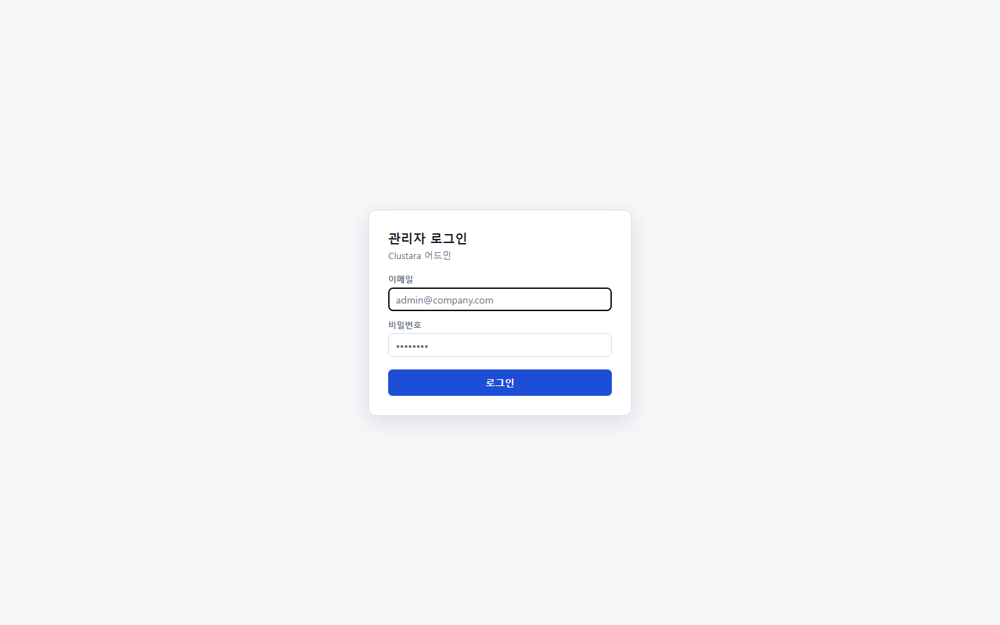
| 연동 API | POST /auth/login, POST /auth/refresh |
|---|---|
| 관련 테이블 | k8s_users (또는 인메모리 부트스트랩 처리), k8s_audit_events |
메뉴 경로: #/k8s-home
클러스터 전체의 건강 상태와 실시간으로 감지된 위험 요소를 한눈에 파악할 수 있는 종합 관제 대시보드입니다.

| 연동 API | GET /admin/k8s/inventory, GET /admin/k8s/findings |
|---|---|
| 관련 테이블 | k8s_clusters, k8s_inventory, k8s_events |
메뉴 경로: #/k8s-collector
인클러스터 에이전트(clustara-agent)의 실시간 하트비트와 데이터 수집 지연(Lag) 상태를 모니터링합니다.
resourceVersion 저장 상태를 제공합니다.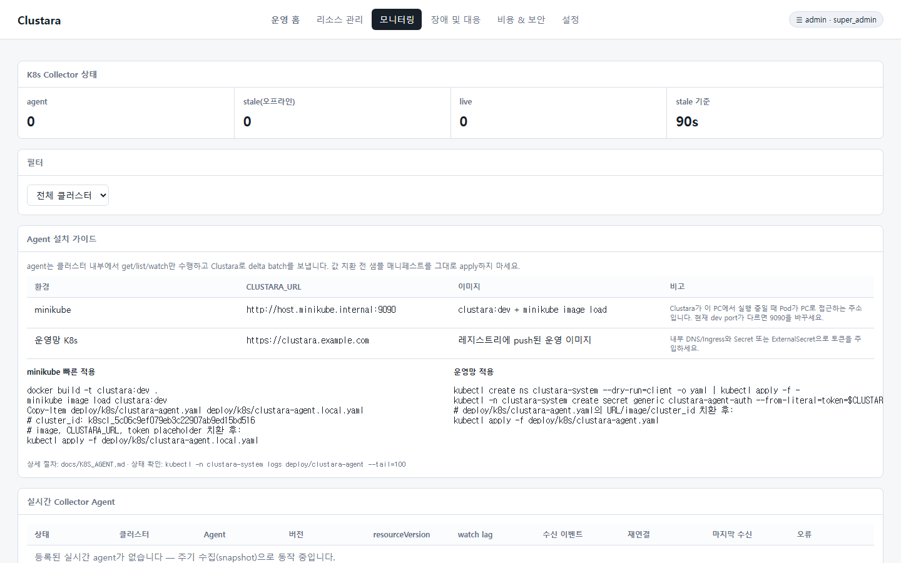
| 연동 API | GET /admin/k8s/agent/status |
|---|---|
| 관련 테이블 | k8s_agent_heartbeats, k8s_collector_offsets, k8s_collector_status |
메뉴 경로: #/k8s
연결된 모든 Kubernetes 클러스터의 네임스페이스, 노드, 워크로드(Deployment, StatefulSet, DaemonSet, Pod)의 자산 목록을 논리적 구조로 통합 제공합니다.
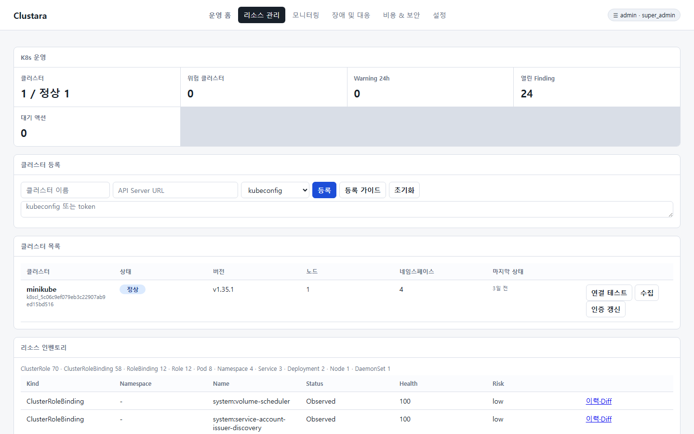
| 연동 API | GET /admin/k8s/inventory |
|---|---|
| 관련 테이블 | k8s_inventory |
메뉴 경로: #/k8s-pods
특정 Pod의 상세 상태 분석, 실시간 로그 스트리밍, 자가 진단 및 디버깅 도구를 통합 제공하는 클러스터라의 핵심 메뉴입니다.

| 연동 API | GET /admin/k8s/pods, GET /admin/k8s/pods/{namespace}/{pod}, GET /admin/k8s/pods/{namespace}/{pod}/logs, POST /admin/k8s/pods/{namespace}/{pod}/logs/analyze, POST /admin/k8s/pods/{namespace}/{pod}/evidence-bundle, GET /admin/k8s/pods/{namespace}/{pod}/golden-diff, GET /admin/k8s/pods/{namespace}/{pod}/health-replay |
|---|---|
| 관련 테이블 | k8s_inventory, k8s_events, k8s_pod_log_queries, k8s_pod_log_snapshots |
메뉴 경로: #/k8s-timeline
특정 리소스의 탄생부터 현재까지의 Manifest 변경(스펙 리비전) 및 K8s 이벤트를 결합하여 시간순 타임라인을 제공합니다.
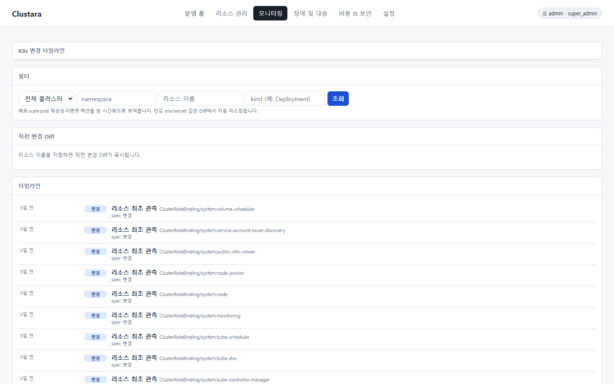
| 연동 API | GET /admin/k8s/revisions, GET /admin/k8s/diff, GET /admin/k8s/timeline |
|---|---|
| 관련 테이블 | k8s_resource_revisions, k8s_events |
메뉴 경로: #/k8s-rca
수집된 경고 이벤트와 변경 이력을 기반으로 장애의 근본 원인(RCA-01~RCA-10)을 자체 엔진으로 진단하여 원인 후보와 안전한 조치 방안을 추천합니다.
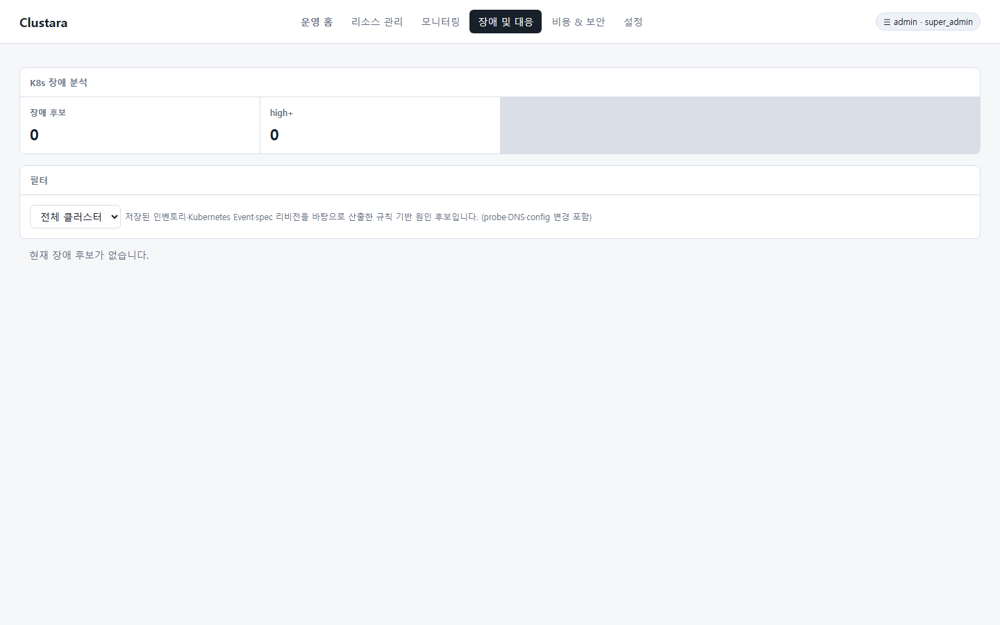
| 연동 API | GET /admin/k8s/rca |
|---|---|
| 관련 테이블 | k8s_inventory, k8s_events, k8s_resource_revisions |
메뉴 경로: #/k8s-incidents
감지된 High/Critical RCA 장애 후보를 지능적으로 그룹화하여 수명주기(Open/Resolved)를 관리하고 공동 대응을 지원하는 장애 워룸 워크스페이스입니다.
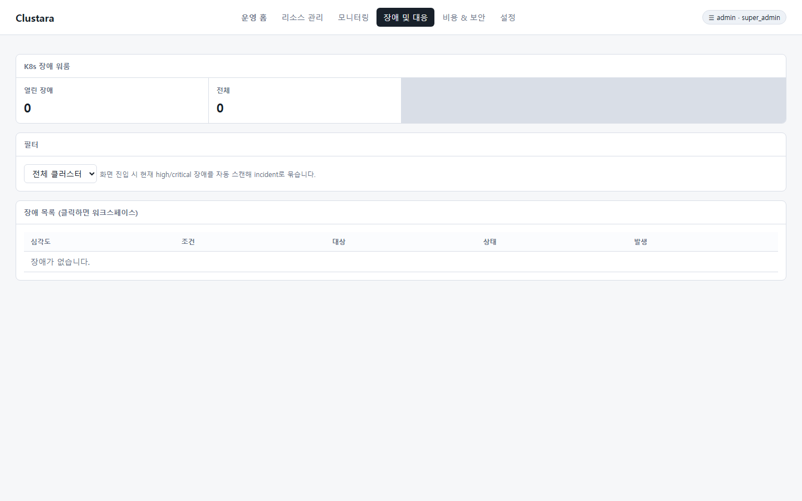
| 연동 API | GET/POST /admin/k8s/incidents, GET /admin/k8s/incidents/{id}, POST /admin/k8s/incidents/{id}/resolve |
|---|---|
| 관련 테이블 | k8s_incidents, k8s_incident_logs |
메뉴 경로: #/k8s-graph
Ingress ↔ Service ↔ Endpoint ↔ Workload(Pod) ↔ PVC ↔ ConfigMap/Secret 간의 토폴로지 관계를 분석하여 장애 전파 범위(Blast Radius)를 시각적인 그래프로 조립합니다.

| 연동 API | GET /admin/k8s/resource-graph |
|---|---|
| 관련 테이블 | k8s_inventory |
메뉴 경로: #/k8s-conn
네트워크 수신(Ingress)부터 백엔드 서비스(Service, Endpoint) 및 스토리지(PVC, PV) 매핑 상태를 주기적으로 검증하여 연결 고리가 끊어진 지점을 진단합니다.
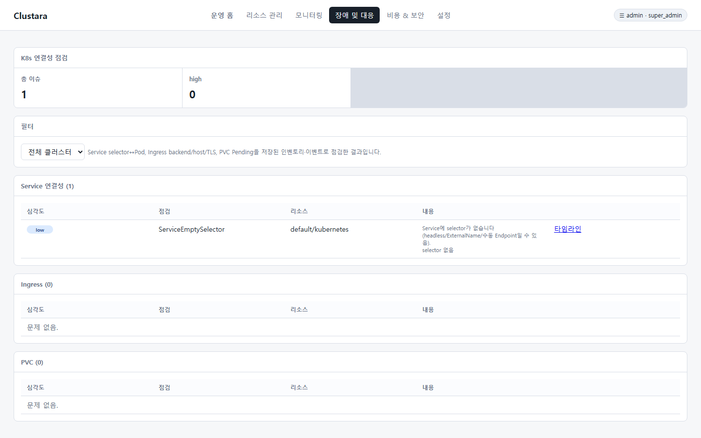
| 연동 API | GET /admin/k8s/connectivity |
|---|---|
| 관련 테이블 | k8s_inventory, k8s_events |
메뉴 경로: #/k8s-actions
클러스터에 물리적인 변경을 가하는 위험 조치 작업(스케일, 재시작, 노드 제어 등)의 사전 영향도를 평가하고, 관리자 승인 단계를 거쳐 안전하게 실행하는 실클러스터 제어 엔진입니다.
scale, rollout_restart, cordon, uncordon, delete_pod를 지원합니다.
| 연동 API | GET/POST /admin/k8s/actions, POST /admin/k8s/actions/{id}/approve|reject|execute |
|---|---|
| 관련 테이블 | k8s_action_requests |
메뉴 경로: #/k8s-capacity
클러스터 노드 자원의 요청률(Bin Packing)과 GPU 사용률, HPA 임계치 한계 도달 여부 등을 종합 분석하여 자원 고갈 위험 및 오토스케일링 정체 상태를 조기 진단합니다.
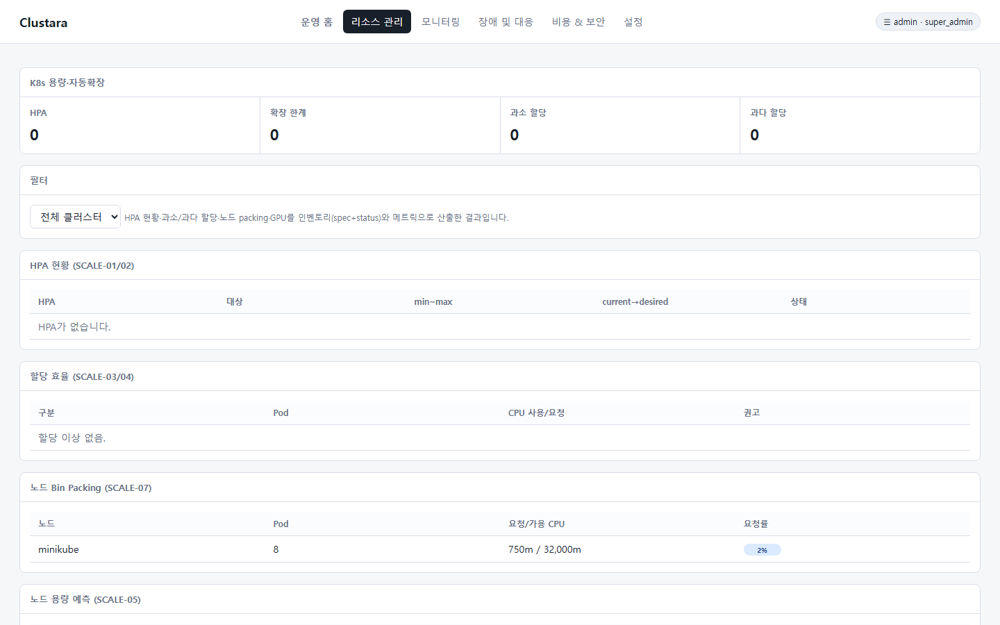
| 연동 API | GET /admin/k8s/capacity, POST /admin/k8s/capacity/simulate |
|---|---|
| 관련 테이블 | k8s_inventory, k8s_metrics |
메뉴 경로: #/k8s-meta
물리적 클러스터들을 논리적인 업무망 단위(운영망, 개발망, DMZ 등)로 그룹핑하고 네임스페이스 단위의 담당 팀, 담당자, 중요도 및 비용 센터 정보를 구성하는 관리 도구입니다.
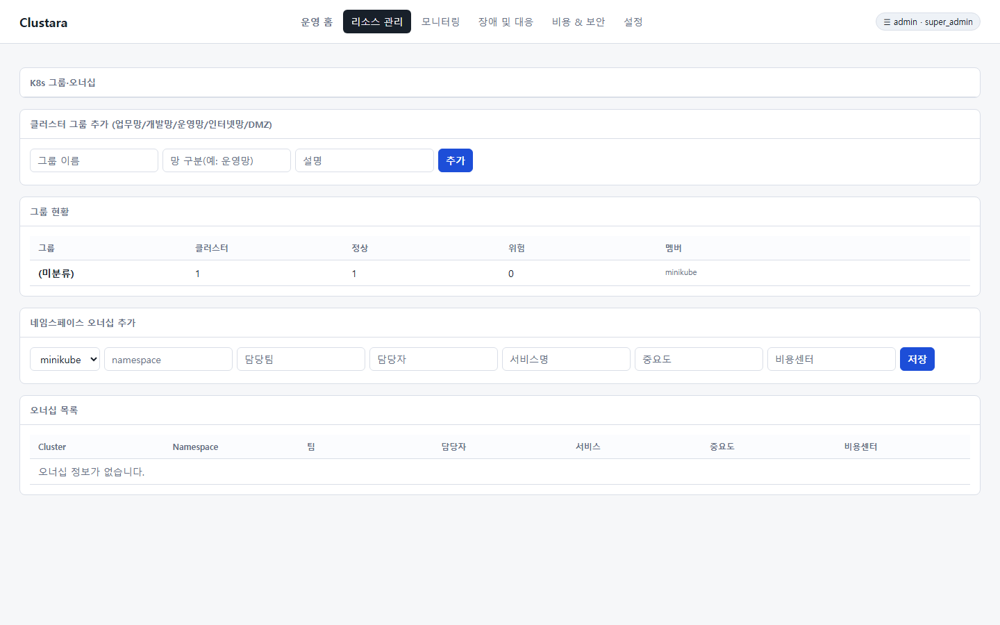
| 연동 API | GET/POST /admin/k8s/groups, GET/POST /admin/k8s/ownership |
|---|---|
| 관련 테이블 | k8s_cluster_groups, k8s_namespace_ownership |
메뉴 경로: #/k8s-ai
수집된 실시간 RCA 분석 정보, Warning 이벤트, 그리고 소스 리비전 변경 Diff 정보만을 신뢰할 수 있는 소스(Grounding Source)로 삼아 자연어 형태의 장애 해결법 및 일일/주간 운영 종합 보고서를 작성해 주는 AI 비서 기능입니다.
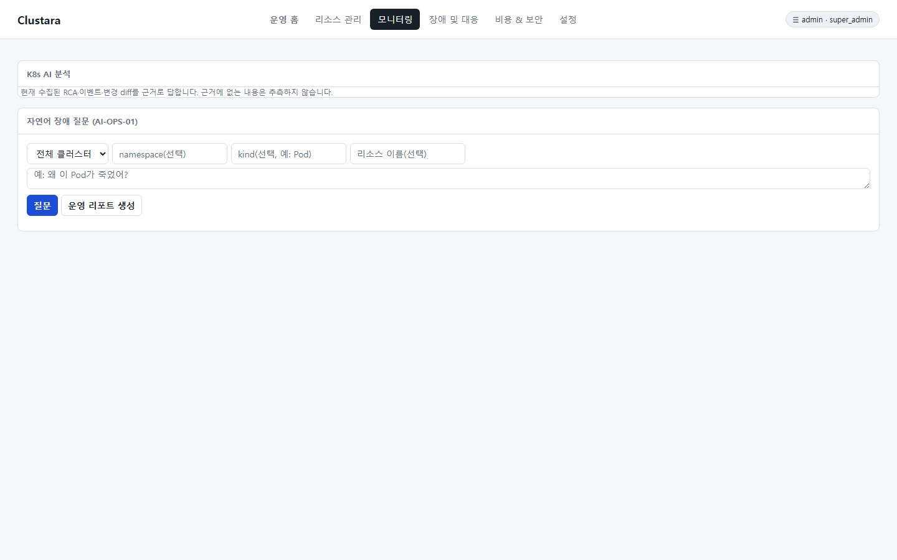
| 연동 API | POST /admin/k8s/ai/ask, POST /admin/k8s/ai/report |
|---|---|
| 관련 테이블 | k8s_inventory, k8s_events, k8s_incidents |
메뉴 경로: #/k8s-cost
vCPU 및 메모리당 단가 설정을 기준으로 네임스페이스, 비용 센터, 클러스터 그룹별 월 추정 비용을 정산하고 비용 절감을 위한 Rightsizing 가이드를 제공합니다.
usage x 1.3 기준의 적정 자원 스펙 권장값을 산출하고, 다운사이징 시 예상되는 월간 절감액(KRW)을 표기합니다.
| 연동 API | GET /admin/k8s/cost, GET/POST /admin/k8s/cost/config, GET /admin/k8s/cost/recommendations |
|---|---|
| 관련 테이블 | k8s_inventory, k8s_metrics, k8s_cost_configs |
메뉴 경로: #/k8s-security
이미지 태그 정책 위반, TLS 인증서 만료 임박, Secret 무단 참조, 과도한 권한의 RBAC 정책 등 클러스터의 전반적인 보안 위협을 실시간 스캔하여 보안 점수(Security Score)를 산출합니다.
cluster-admin)이 부여된 룰의 변경 내역을 대조 분석합니다.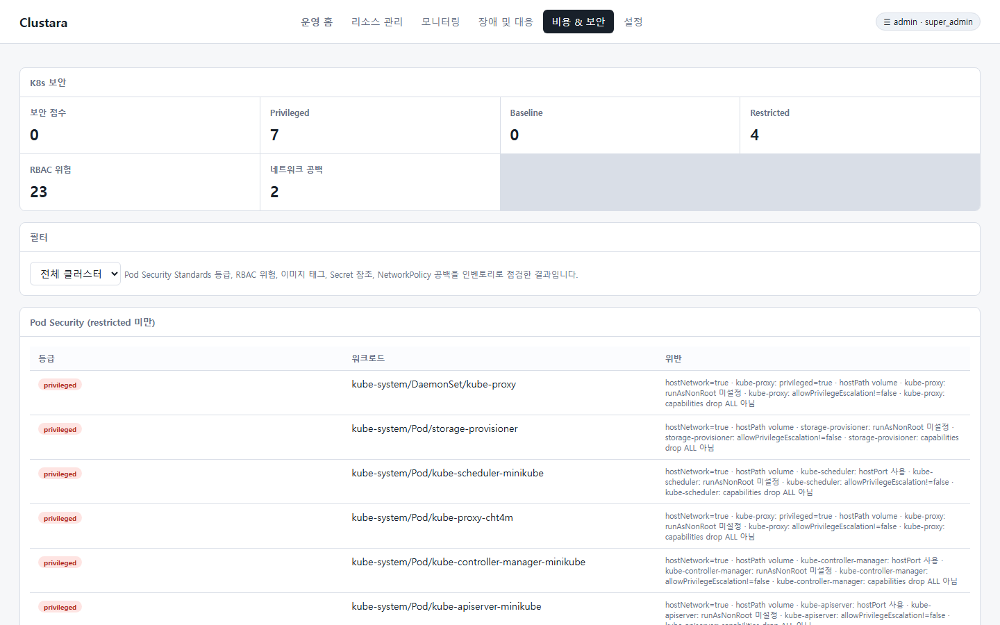
| 연동 API | GET /admin/k8s/security, GET /admin/k8s/rbac-diff |
|---|---|
| 관련 테이블 | k8s_security_findings, k8s_inventory |
메뉴 경로: #/k8s-policy
Admission Controller의 안전장치를 시뮬레이션하고, 클러스터의 정책 컴플라이언스 기준(Pod Security Standards) 부합 여부를 사전 진단하는 정책 거버넌스 도구입니다.
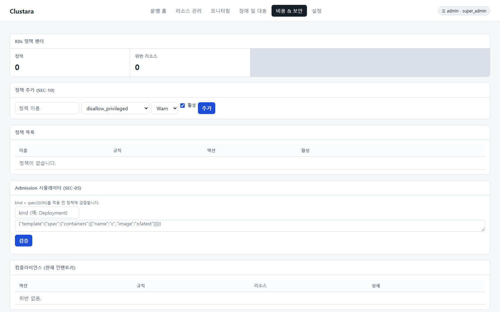
| 연동 API | GET/POST /admin/k8s/policies, POST /admin/k8s/policies/simulate, GET /admin/k8s/policies/compliance |
|---|---|
| 관련 테이블 | k8s_terminal_policies |
메뉴 경로: #/k8s-slo
네임스페이스 및 서비스 단위로 설정한 가용성 목표값(기본 99.9%) 대비 현재의 에러 버짓 잔여율과 가용 시간, 그리고 복구 시간(MTTR)을 실시간 산출하여 신뢰성을 관리합니다.

| 연동 API | GET /admin/k8s/slo |
|---|---|
| 관련 테이블 | k8s_incidents |
메뉴 경로: #/k8s-settings
단가 기준, 알림 정책(조용한 시간, 팀별 채널 매핑), 그리고 안전한 터미널 접속을 통제하는 Terminal Policy Builder 설정을 한 곳에서 관리하는 메뉴입니다.

| 연동 API | GET/POST /admin/k8s/terminal-policies, POST /admin/k8s/terminal-policies/evaluate |
|---|---|
| 관련 테이블 | k8s_terminal_policies, k8s_pod_exec_sessions |